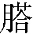

第十二回 梁山泊林冲落草 汴京城杨志卖刀
诗曰：
天罡地煞下凡尘，托化生身各有因。
落草固缘屠国士，卖刀岂可杀平人？
东京已降天蓬帅，北地生成黑煞神。
豹子头逢青面兽，同归水浒乱乾坤。
话说林冲打一看时，只见那汉子头戴一顶范阳毡笠，上撒着一把红缨，穿一领白段子征衫，系一条纵线绦，下面青白间道行缠，抓着裤子口，獐皮袜，带毛牛膀靴，跨口腰刀，提条朴刀，生得七尺五六身材，面皮上老大一搭青记，腮边微露些少赤须，把毡笠子掀在脊梁上，坦开胸脯，带着抓角儿软头巾，挺手中朴刀，高声喝道：”你那泼贼，将俺行李财帛那里去了？”林冲正没好气，那里答应，睁圆怪眼，倒竖虎须，挺着朴刀，抢将来斗那个大汉。但见：
残雪初晴，薄云方散。溪边踏一片寒冰，岸畔涌两条杀气。一上一下，似云中龙斗水中龙；一往一来，如岩下虎斗林下虎。一个是擎天白玉柱，一个是架海紫金梁。那个没些须破绽高低，这个有千般威风勇猛。一个尽气力望心窝对戳，一个弄精神向胁肋忙穿。架隔遮拦，却似马超逢翼德；盘旋点搠，浑如敬德战秦琼。斗来半晌没输赢，战到数番无胜败。果然巧笔画难成，便是鬼神须胆落。
林冲与那汉斗到三十来合，不分胜败。两个又斗了十数合，正斗到分际，只见山高处叫道：”两个好汉不要斗了。”林冲听得，蓦地跳出圈子外来。两个收住手中朴刀，看那山顶上时，却是王伦和杜迁、宋万，并许多小喽啰走下山来，将船渡过了河，说道：”两位好汉，端的好两口朴刀，神出鬼没。这个是俺的兄弟林冲。青面汉，你却是谁？愿通姓名。”那汉道：”洒家是三代将门之后，五侯杨令公之孙，姓杨名志，流落在此关西。年纪小时，曾应过武举，做到殿司制使官。道君因盖万岁山1，差一般十个使制，去太湖边搬运花石纲2赴京交纳。不想洒家时乖运蹇，押着那花石纲来到黄河里，遭风打翻了船，失陷了花石纲，不能回京赴任，逃去他处避难。如今赦了俺们罪犯，洒家今来收得一担儿钱物，待回东京，去枢密院使用，再理会本身的勾当。打从这里经过，雇倩庄家挑那担儿，不想被你们夺了。可把来还洒家如何？”王伦道：”你莫不是绰号唤青面兽的？”杨志道：”洒家便是。”王伦道：”既然是杨制使，就请到山寨吃三杯水酒，纳还行李如何？”杨志道：”好汉既然认得洒家，便还了俺行李，更强似请吃酒。”王伦道：”制使，小可数年前到东京应举时，便闻制使大名，今日幸得相见，如何教你空去。且请到山寨少叙片时，并无他意。”杨志听说了，只得跟了王伦一行人等过了河，上山寨来。就叫朱贵同上山寨相会，都来到寨中聚义厅上。左边一带四把交椅，却是王伦、杜迁、宋万、朱贵，右边一带两把交椅，上首杨志，下首林冲，都坐定了。王伦叫杀羊置酒，安排筵宴管待杨志，不在话下。
话休絮繁。酒至数杯，王伦指着林冲对杨志道：”这个兄弟，他是东京八十万禁军教头，唤做豹子头林冲。因这高太尉那厮安不得好人，把他寻事刺配沧州，那里又犯了事，如今也新到这里。却才制使要上东京干勾当，不是王伦纠合制使，小可兀自弃文就武，来此落草。制使又是有罪的人，虽经赦宥，难复前职。亦且高俅那厮见掌军权，他如何肯容你？不如只就小寨歇马，大秤分金银，大碗吃酒肉，同做好汉。不知制使心下主意若何？”杨志答道：”重蒙众头领如此带携，只是洒家有个亲眷，见在东京居住。前者官事连累了他，不曾酬谢得他，今日欲要投那里走一遭。望众头领还了洒家行李，如不肯还，杨志空手也去了。”王伦笑道：”既是制使不肯在此，如何敢勒逼入伙。且请宽心住一宵，明日早行。”杨志大喜。当日饮酒到二更方散，各自去歇息了。次日早起来，又置酒与杨志送行。吃了早饭，众头领叫一个小喽啰把昨夜担儿挑了，一齐都送下山来，到路口与杨志作别，教小喽啰渡河，送出大路。众人相别了，自回山寨。王伦自此方才肯教林冲坐第四位，朱贵做第五位。从此，五个好汉在梁山泊打家劫舍，不在话下。
只说杨志出了大路，寻个庄家挑了担子，发付小喽啰自回山寨。杨志取路投东京来，路上免不得饥餐渴饮，夜住晓行，不数日，来到东京。有诗为证：
清白传家杨制使，耻将身迹履危机。
岂知奸佞残忠义，顿使功名事已非。
那杨志入得城来，寻个客店安歇下。庄客交还担儿，与了些银两，自回去了。杨志到店中放下行李，解了腰刀、朴刀，叫店小二将些碎银子买些酒肉吃了。过数日，央人来枢密院打点理会本等3的勾当，将出那担儿内金银财物，买上告下，再要补殿司府制使职役。把许多东西都使尽了，方才得申文书，引去见殿帅高太尉。来到厅前，那高俅把从前历事文书都看了，大怒道：”既是你等十个制使去运花石纲，九个回到京师交纳了，偏你这厮把花石纲失陷了，又不来首告，倒又在逃，许多时捉拿不着。今日再要勾当，虽经赦宥所犯罪名，难以委用。”把文书一笔都批倒了，将杨志赶出殿司府来。
杨志闷闷不已，回到客店中，思量：”王伦劝俺，也见得是。只为洒家清白姓字，不肯将父母遗体来点污了。指望把一身本事，边庭上一枪一刀，博个封妻荫子，也与祖宗争口气，不想又吃这一闪！高太尉，你忒毒害，恁地克剥！”心中烦恼了一回，在客店里又住几日，盘缠都使尽了。杨志寻思道：”却是怎地好！只有祖上留下这口宝刀，从来跟着洒家，如今事急无措，只得拿去街上货卖得千百贯钱钞，好做盘缠，投往他处安身。”当日将了宝刀，插了草标儿，上市去卖。走到马行街内，立了两个时辰，并无一个人问。将立到晌午时分，转来到天汉州桥热闹处去卖。杨志立未久，只见两边的人都跑入河下巷内去躲。杨志看时，只见都乱撺，口里说道：”快躲了，大虫来也。”杨志道：”好作怪！这等一片锦城池，却那得大虫来？”当下立住脚看时，只见远远地黑凛凛一大汉，吃得半醉，一步一 撞将来。杨志看那人时，形貌生得粗丑。但见：
撞将来。杨志看那人时，形貌生得粗丑。但见：
面目依稀似鬼，身材仿佛如人。杈枒怪树，变为肐

形骸；臭秽枯桩，化作腌臜魍魉。浑身遍体，都生渗渗濑濑沙鱼皮；夹脑连头，尽长拳拳弯弯卷螺发。胸前一片锦顽皮，额上三条强拗皱。原来这人是京师有名的破落户泼皮，叫做没毛大虫牛二，专在街上撒泼行凶撞闹，连为几头官司，开封府也治他不下，以此满城人见那厮来都躲了。却说牛二抢到杨志面前，就手里把那口宝刀扯将出来，问道：”汉子，你这刀要卖几钱？”杨志道：”祖上留下宝刀，要卖三千贯。”牛二喝道：”甚么鸟刀，要卖许多钱！我三百文买一把，也切得肉，切得豆腐。你的鸟刀有甚好处，叫做宝刀？”杨志道：”洒家的须不是店上卖的白铁刀，这是宝刀。”牛二道：”怎地唤做宝刀？”杨志道：”第一件砍铜剁铁，刀口不卷；第二件吹毛得过；第三件杀人刀上没血。”牛二道：”你敢剁铜钱么？”杨志道：”你便将来，剁与你看。”牛二便去州桥下香椒铺里，讨了二十文当三钱4，一垛儿将来，放在州桥阑干上，叫杨志道：”汉子，你若剁得开时，我还你三千贯。”那时看的人虽然不敢近前，向远远地围住了望。杨志道：”这个直得甚么。”把衣袖卷起，拿刀在手，看的较胜，只一刀，把铜钱剁做两半。众人都喝采。牛二道：”喝甚么鸟采！你且说第二件是甚么？”杨志道：”吹毛过得。就把几根头发望刀口上只一吹，齐齐都断。”牛二道：”我不信。”自把头上拔下一把头发，递与杨志：”你且吹我看。”杨志左手接过头发，照着刀口上尽气力一吹，那头发都做两段，纷纷飘下地来。众人喝采，看的人越多了。牛二又问：”第三件是甚么？”杨志道：”杀人刀上没血。”牛二道：”怎地杀人刀上没血？”杨志道：”把人一刀砍了，并无血痕，只是个快。”牛二道：”我不信！你把刀来剁一个人我看。”杨志道：”禁城之中，如何敢杀人？你不信时，取一只狗来，杀与你看。”牛二道：”你说杀人，不曾说杀狗。”杨志道：”你不买便罢，只管缠人做甚么！”牛二道：”你将来我看。”杨志道：”你只顾没了当5！洒家又不是你撩拨的。”牛二道：”你敢杀我？”杨志道：”和你往日无冤，昔日无仇，一物不成，两物见在6，没来由杀你做甚么？”牛二紧揪住杨志说道：”我鳖鸟买你这口刀。”杨志道：”你要买，将钱来。”牛二道：”我没钱。”杨志道：”你没钱，揪住洒家怎地？”牛二道：”我要你这口刀。”杨志道：”俺不与你。”牛二道：”你好男子，剁我一刀。”杨志大怒，把牛二推了一跤。牛二爬将起来，钻入杨志怀里。杨志叫道：”街坊邻舍都是证见。杨志无盘缠，自卖这口刀。这个泼皮强夺洒家的刀，又把俺打。”街坊人都怕这牛二，谁敢向前来劝。牛二喝道：”你说我打你，便打杀直甚么！”口里说，一面挥起右手，一拳打来。杨志霍地躲过，拿着刀抢入来，一时性起，望牛二颡根上搠个着，扑地倒了。杨志赶入去，把牛二胸脯上又连搠了两刀，血流满地，死在地上。
杨志叫道：”洒家杀死这个泼皮，怎肯连累你们！泼皮既已死了，你们都来同洒家去官府里出首。”坊隅众人慌忙拢来，随同杨志，径投开封府出首，正值府尹坐衙。杨志拿着刀，和地方邻舍众人，都上厅来，一齐跪下，把刀放在面前。杨志告道：”小人原是殿司制使，为因失陷花石纲，削去本身职役，无有盘缠，将这口刀在街货卖。不期被个泼皮破落户牛二，强夺小人的刀，又用拳打小人，因此一时性起，将那人杀死。众邻舍都是证见。”众人亦替杨志告说，分诉了一回。府尹道：”既是自行前来出首，免了这厮入门的款打。”且叫取一面长枷枷了，差两员相官，带了仵作行人，监押杨志并众邻舍一干人犯，都来天汉州桥边，登场7检验了，叠成文案。众邻舍都出了供状，保放随衙听候，当厅发落，将杨志于死囚牢里监收。但见：
推临狱内，拥入牢门。抬头参青面使者，转面见赤发鬼王。黄须节级，麻绳准备吊绷揪；黑面押牢，木匣安排牢锁镣。杀威棒，狱卒断时腰痛；撒子角，囚人见了心惊。休言死去见阎王，只此便为真地狱。
且说杨志押到死囚牢里，众多押牢禁子、节级见说杨志杀死没毛大虫牛二，都可怜他是个好男子，不来问他要钱，又好生看觑他。天汉州桥下众人，为是杨志除了街上害人之物，都敛些盘缠，凑些银两，来与他送饭，上下又替他使用。推司也觑他是个首身的好汉，又与东京街上除了一害，牛二家又没苦主，把款状都改得轻了。三推六问，却招做一时斗欧杀伤，误伤人命。待了六十日限满，当厅推司禀过府尹，将杨志带出厅前，除了长枷，断了二十脊杖，唤个文墨匠人，刺了两行金印，迭配北京大名府留守司充军。那口宝刀，没官入库。当厅押了文牒，差两个防送公人，免不得是张龙、赵虎，把七斤半铁叶子盘头护身枷钉了。分付两个公人，便教监押上路。天汉州桥那几个大户，科敛8些银两钱物，等候杨志到来，请他两个公人一同到酒店里吃了些酒食，把出银两赍发两位防送公人，说道：”念杨志是个好汉，与民除害。今去北京路途中，望乞二位上下照觑，好生看他一看。”张龙、赵虎道：”我两个也知他是好汉，亦不必你众位分付，但请放心。”杨志谢了众人。其馀多的银两，尽送与杨志做盘缠，众人各自散了。
话里只说杨志同两个公人来到原下的客店里，算还了房钱饭钱，取了原寄的衣服行李，安排些酒食，请了两个公人，寻医士赎了几个杖疮的膏药贴了棒疮，便同两个公人上路，三个望北京进发。五里单牌，十里双牌，逢州过县，买些酒肉，不时间请张龙、赵虎吃。三个在路，夜宿旅馆，晓行驿道，不数日来到北京，入得城中，寻个客店安下。原来北京大名府留守司，上马管军，下马管民，最有权势。那留守唤做梁中书，讳世杰，他是东京当朝太师蔡京的女婿。当日是二月初九日，留守升厅，两个公人解杨志到留守司厅前，呈上开封府公文。梁中书看了，原在东京时也曾认得杨志，当下一见了，备问情由。杨志便把高太尉不容复职，使尽钱财，将宝刀货卖，因而杀死牛二的实情，通前一一告禀了。梁中书听得大喜，当厅就开了枷，留在厅前听用。押了批回与两个公人，自回东京，不在话下。
只说杨志自在梁中书府中，早晚殷勤，听候使唤。梁中书见他勤谨，有心要抬举他，欲要迁他做个军中副牌，月支一分请受。只恐众人不伏，因此传下号令，教军政司告示大小诸将人员，来日都要出东郭门教场中去演武试艺。当晚，梁中书唤杨志到厅前。梁中书道：”我有心要抬举你做个军中副牌，月支一分请受，只不知你武艺如何？”杨志禀道：”小人应过武举出身，曾做殿司府制使职役，这十八般武艺，自小习学。今日蒙恩相抬举，如拨云见日一般。杨志若得寸进，当效衔环背鞍之报。”梁中书大喜，赐与一副衣甲。当夜无事。有诗为证：
杨志英雄伟丈夫，卖刀市上杀无徒。
却教罪犯幽燕地，演武场中敌手无。
次日天晓，时当二月中旬，正值风和日暖。梁中书早饭已罢，带领杨志上马，前遮后拥，往东郭门来。到得教场中，大小军卒并许多官员接见，就演武厅前下马。到厅上，正面撒下一把浑银交椅坐下。左右两边齐臻臻地排着两行官员：指挥使、团练使、正制使、统领使、牙将、校尉、副牌军。前后周围恶狠狠地列着百员将校。正将台上立着两个都监：一个唤做李天王李成，一个唤做闻大刀闻达。二人皆有万夫不当之勇，统领着许多军马，一齐都来朝着梁中书呼三声喏。却早将台上竖起一面黄旗来。将台两边，左右列着三五十对金鼓手，一齐发起擂来，品了三通画角，发了三通擂鼓，教场里面谁敢高声。又见将台上竖起一面净平旗来，前后五军一齐整肃。将台上把一面引军红旗磨动，只见鼓声响处，五百军列成两阵，军士各执器械在手。将台上又把白旗招动，两阵马军齐齐地都立在面前，各把马勒住。
梁中书传下令来，叫唤副牌军周谨向前听令。右阵里周谨听得呼唤，跃马到厅前，跳下马，插了枪，暴雷也似声个大喏。梁中书道：”着副牌军施逞本身武艺。”周谨得了将令，绰枪上马，在演武厅前左盘右旋，右盘左旋，将手中枪使了几路，众人喝采。梁中书道：”叫东京对拨来的军健杨志。”杨志转过厅前，唱个大喏。梁中书道：”杨志，我知你原是东京殿司府制使军官，犯罪配来此间。即目9盗贼猖狂，国家用人之际，你敢与周谨比试武艺高低？如若赢时，便迁你充其职役。”杨志道：”若蒙恩相差遣，安敢有违钧旨。”梁中书叫取一匹战马来，教甲仗库随行官吏应付军器，教杨志披挂上马，与周谨比试。杨志去厅后把夜来衣甲穿了，拴束罢，带了头盔、弓箭、腰刀，手拿长枪上马，从厅后跑将出来。梁中书看了道：”着杨志与周谨先比枪。”周谨先怒道：”这个贼配军，敢来与我交枪！”谁知恼犯了这个好汉，来与周谨斗武。
不因杨志来与周谨比试，杨志在万马丛中闻姓字，千军队里夺头功。直教大斧横担来水浒，钢枪斜拽上梁山。毕竟杨志与周谨比试引出甚么人来，且听下回分解。
《第十二回 梁山泊林冲落草 汴京城杨志卖刀》读后感
接上一回，跳出来和林冲决斗的大汉原来就是青面兽杨志。二人实力相当，“架隔遮拦，却似马超逢翼德；盘旋点搠，浑如敬德战秦琼。” 最后还是王伦出来劝架才住手。
和初次见林冲不同各种嫌弃不同，王伦对杨志非常尊敬，还拍马屁说自己数年前在东京应举时就已经听过其大名，并主动邀请杨志入伙，在杨志明确拒绝后，还是各种好酒好菜款待。看到这里，只想求林冲此时的心理阴影面积。其实，这只是王伦心胸狭隘，嫉贤妒能，担心林冲会威胁到自己的领导地位，因此想拉杨志入伙来制衡林冲，此乃“驱虎吞狼”之计。
杨志到了东京，使尽了各种财物才打通关节见到了高俅。谁知高俅以其犯错后不首告为由，直接将其扫地出门。杨志心中那个悔啊，高俅你这个王八蛋太狠毒了。怎么就不听王伦的呢，自己本可以在山上大秤分金银，大碗吃酒肉。现在折腾了那么久，不但没有官复原职，反而盘缠用尽，不得不去市场上售卖家传宝刀。
杨志在市场上等了半天，只等来了一个无赖泼皮牛二。牛二不但要抢夺杨志的刀，还叫嚣着你砍我一刀试试？结果就是真的被砍了。古往今来，凡是主动让别人砍自己的，多半都被砍了。杨志也是，你第一下就算了，人都倒下了，还去补两刀，这就有点过了。冲动是魔鬼啊。手里有宝刀，心中有杀气，这就是为什么“放下屠刀，才能立地成佛”。
不过杨志也算是为民除害了，因此大家都帮着他洗白，最后只判了一个到北京大名府充军的罪名。杨志本来就指望靠一身本事，在边庭上一枪一刀，博个封妻荫子，光宗耀祖，这岂不是天随人愿？果然，到了北京大名府留守司，当朝太师蔡京的女婿留守梁世杰就将其留用。杨志早晚殷勤，这梁世杰就对其更加满意，一心要抬举他。但为了服众，特举行了一场演武大会，让杨志在上面崭露头角。首先和杨志对决的就是副牌军周谨。
读后感
《第十二回 梁山泊林冲落草 汴京城杨志卖刀》
和林冲较量的大汉原来就是青面兽杨志。二人实力相当，打了几十个回合都不分胜负。最后还是王伦等人让二人停止打斗。王伦得知杨志的真实身份后，显得非常尊敬杨志，请杨志上山喝酒还打算招揽他入伙，不过杨志不愿意，王伦也只得作罢，将其行李归还杨志并送其下山。这时，王伦才接受了林冲入伙。
杨志之前回京后，四处打点上下，本来想复职，但高太尉指责其丢失花石纲后不来自首，直接拒绝了他，将其扫地出门。
杨志非常郁闷，身上钱财也花完了，只得将祖传宝刀拿到街上叫卖。结果没人来问，最后却来了一个无赖牛二。牛儿平时欺压百姓，无人敢惹。这次他也胡搅蛮缠，想强取豪夺，不过他这次撞上了硬茬。杨志在展示了自己宝刀的锋利后，看到牛儿仍不想买只想抢，于是一时性起，直接结果了他。虽说杨志是处于义愤之中，但他在砍倒牛二后，还跟上去补刀，这显得他有点残忍。
最后由于街坊领居都认为杨志是为民除害，帮助他说了不少好话，牛儿家里又没有亲属，因此重罪轻判，杨志充军到大名府。
大名府留守梁中书（当朝太师蔡京女婿）十分欣赏杨志，当场就留用了杨志。后来见杨志做事勤谨，还想进一步抬举他做副牌军，于是号令了一场演武大会，让杨志和现任副牌军周谨比试。二人结果会怎样呢？
脚注
解释下面的脚注：
- : 生身: 【shēng shēn】 1. 肉体；肉身。 😄 2. 出生。 😄 3. 亲生。
- 平人: 【píng rén】 1. 平民百姓。 😄 2. 普通人；一般人。 😄 3. 无罪之人；良民。 😄 4. 地位相等的人。 😄 5. 无病之人。
- 黑煞神: 【无拼音信息】 见“黑煞将军”条。明·顾起元《客座赘语》卷一：解道，洪武时为京卫，年方弱冠。
- 红缨: 【hóng yīng】
- 征衫: 【zhēng shān】 1. 旅人之衣。 😄 2. 借指远行之人。 😄 3. 戎衣。
- 行缠: 【xíng chán】 裹足布；绑腿布。古时男女都用。后惟兵士或远行者用。
- 老大: 【lǎo dà】 1. 年纪大。 😄 2. 称排行第一的人。 😄 3. 称船主或主要的船工。 😄 4. 帮会中称首领。 😄 5. 很；非常。 😄 6. 谓古老。
- 一搭: 【yī dā】 一团；一处；一块。一起。一叠。犹一绺。
- 青记: 【无拼音信息】 青记 ，病证名。脸面青紫色斑印之病证。
- 些少: 【xiē shǎo】 少许，一点儿。
- 些须: 【xiē xū】 亦作“些需”。少许，一点儿。
- 胁肋: 【xié lèi】 肋骨。参见“肋骨”。
- 胆落: 【dǎn luò】 犹丧胆。形容恐惧之甚。
- 将门: 【jiàng mén】 将帅家门；世代为将的人家。
- 五侯: 【wǔ hóu】 1. 公、侯、伯、子、男五等诸侯。参见“五侯九伯”。 😄 2. 指同时封侯的五人。汉成帝封其舅王谭平阿侯、王商成都侯、王立红阳侯、王根曲阳侯、王逢时高平侯。见《汉书·元后传》。 😄 3. 指同时封侯的五人。东汉大将军梁冀擅权，其子梁胤、叔父梁让及亲属梁淑、梁忠、梁戟皆封侯。 😄 4. 指同时封侯的五人。汉桓帝封宦者单超新丰侯、徐璜武原侯、左悺上蔡侯、具瑗东武阳侯、唐衡汝阳侯。 😄 5. 泛指权贵豪门。
- 杨令公: 【yáng lìng gōng】 对 北宋 名将 杨业 的誉称。
- 武举: 【wǔ jǔ】 1. 指科举制度中的武科。 😄 2. 见“武舉人”。科举时代，武乡试及第者。
- 道君: 【dào jun】 1. 道君的本意在古代又称圣君；仁君，而网络流行的《道君》是网络作家跃千愁继所创作的第四部网络小说 😄 2. 出现：连载于起点中文网、创世中文网的幻想修仙类网络小说，作者是跃千愁。 爆火：2017年2月14日在起点中文网双平台首发，连载中。 现状：《道君》是网络文学界的一股清流了，文字功底还是很强的。
-
一般: 【yī bān】 1. （形）一样；同样：～见识 ～无二。 😄 2. 普通；通常：他的学习成绩～。 😄 3. 一般是指一样，普通，总体上，相关文献有唐王建《宫词》。 - 时乖运蹇: 【shí guāi yùn jiǎn】 时运不顺，命运不佳。谓处境不顺利。
- 失陷: 【shī xiàn】 1. 谓土地、城池等被敌方攻占。 😄 2. 谓财物受到损失。 😄 3. 谓犯错误。 😄 4. 被俘虏。
- 枢密院: 【shū mì yuàn】一种古代官署。掌管国家机要政务。创始于唐中叶，掌出纳帝命。宋代与中书省并称为「两府」，掌兵权；明初废。也称为「枢府」、「枢庭」。
- 雇倩: 【gù qìng】 1. 出钱雇请。 😄 2. 出租。 😄 3. 付酬请人用车船等为自己服务。
- 水酒: 【shuǐ jiǔ】 很淡薄的酒（多用作谦辞，指请客时所备的酒）。
- 纳还: 【nà huán】归还、送还。《初刻拍案惊奇》卷二三：「崔生知是闺中之物，急欲进去纳还。」
- 强似: 【无拼音信息】 强似，汉语词汇，拼音：qiáng sì，释义：指胜于；超过。
- 小可: 【xiǎo kě】 小可 (1) [(in self-reference)Ⅰ]∶自称,谦称(多见于早期白话) 小可每还疑心,不敢轻信。——《二刻拍案惊奇》 (2) [unimportant]∶寻常,不重要 非同小可
- 应举: 【yìng jǔ】 1. 接受选用或举荐。 😄 2. 参加科举考试。
- 纠合: 【jiū hé】 亦作“乣合”。集合；聚集。
- 兀自: 【wù zì】 1. 径自。 😄 2. 亦作“兀子 ”。还；仍然。
- 赦宥: 【shè yòu】赦免、宽恕。《五代史平话．唐史．卷上》：「自知悔罪，职贡相继，乞从赦宥。」《三国演义》第三回：「何进谋反，已伏诛矣。其余胁从，尽皆赦宥。」
- 带携: 【dài xié】 带领；提挈。
- 官事: 【guān shì】 1. 公家的事务。如：「官事官办」。也作「公事」。诉讼的事。《老残游记．第五回》：「你说，这官事打得赢打不赢呢？」 😄 2. 官事，读音是guānshì，汉语词语，解释为旧时指公家的事;官府的事宜.
- 勒逼: 【lè bī】 强迫；逼迫。
- 置酒: 【zhì jiǔ】 置酒 zhìjiǔ [give a feast] 摆下酒宴 置酒大会宾客。——《史记·魏公子列传》
- 奸佞: 【jiān nìng】 1. 奸邪谄媚。 😄 2. （个）奸邪谄媚的人。
- 本等: 【běn děng】 1. 本分。恰如其身份地位。 😄 2. 本分。本身分内。 😄 3. 指分内应作或应有的事。 😄 4. 这一等级。 😄 5. 指原来的等级。 😄 6. 本来，原来。
- 职役: 【zhí yì】 1. 犹职事。多指较为低贱的职务。 😄 2. 古代官府分派民户充当官差并供应财物的徭役。唐大中九年 😄 3. 公元 😄 4. 年 😄 5. 令州县作差科簿﹐按户等轮差。宋职役分四类:供应官物的﹐如衙前; 😄 6. 督课赋税的﹐如里正﹑户长﹑乡书手等; 😄 7. 逐捕盗贼的﹐如耆长﹑弓手﹑壮丁等; 😄 8. 供官府使唤的﹐如承符﹑人力﹑手力﹑散从等。熙时职役改为雇役﹐到南宋恢复差役。明时亦有职役。
- 殿帅: 【diàn shuài】 1. 宋 代称统领禁军的殿前司长官都指挥使或殿前指挥使为殿帅。 😄 2. 是指宋代称统领禁军的殿前司长官都指挥使或殿前指挥使。
- 历事: 【lì shì】 1. 明代官吏实习制度。明初定制，国子监生学习至一定年限，分拨到政府各部门实习吏事，称“历事”。实习凡三月，经考核，上等者报吏部候补，但须回监再学习一年，始正式授官。清初因承明制。 😄 2. 接连任职。
- 交纳: 【jiāo nà】 1. 结交。 😄 2. 奉献；交付。
- 首告: 【shǒu gào】 代人自首；出面告发。
- 委用: 【wěi yòng】 1. 任用。 😄 2. 委用，汉语词汇。拼音：wěi yòng注音：ㄨㄟˇ ㄩㄥˋ释义：任用
- 指望: 【zhǐ wàng】 1. 期望；希望。亦指所期望的；盼头。 😄 2. 料想，料到。
- 边庭: 【biān tíng】 1. 犹边地。 😄 2. 边地的官署。
- 封妻荫子: 【fēng qī yìn zǐ】 妻受封诰，子孙亦荫袭官爵利禄或规定的特权，均属封建帝王宠赐臣下的一种优渥待遇。
- 闪: 【shǎn】[动] 😄 1.探头窥视。《三国志．卷一五．魏书．梁习传》「思亦能吏，然苛碎无大体」句下裴松之注引《魏略》：「白日常自于墙壁间闚闪。」 😄 2.避开、躲避。元．曾瑞〈四块玉．官况甜〉曲：「雠多恩少人皆厌，业贯盈，横祸添，无处闪。」《警世通言．卷二○．计押番金鳗产祸》：「掇开门闪身入去，随手关了。」 😄 3.突然显现、忽隐忽现。如：「闪光」、「脑中闪过一个念头。」 😄 4.弄、逼迫。《水浒传》第一一回：「谁想今日被高俅这贼坑陷了我这一场，……闪得我有家难奔，有国难投，受此寂寞。」 😄 5.抛弃、撇下。元．马致远《青衫泪》第二折：「你好下得白解元，闪下我女少年。」《西游记》第二回：「怎么一去许久，把我们俱闪在这里。」 😄 6.扭伤、挫伤。如：「闪了腰」。元．王实甫《西厢记．第四本．第二折》：「夫人休闪了手，且息怒停嗔。」 😄 [名] 😄 1.雷电所发出的光。如：「西边又打闪，可能快下雨了。」 😄 2.差错、危险。如：「万一有什么闪失，我如何向你父母交代？」《水浒传》第一二回：「不想又吃了这一闪！高太尉，你忒毒害，恁地克剥！」
- 克剥: 【kè bāo】 1. 克扣剥削。 😄 2. 犹克薄。 😄 3. 克剥，拼音是kè bāo ，是汉语词汇，解释为克扣剥削；也指克薄。
- 钱钞: 【qián chāo】 1. 泛指钱财。 😄 2. 指钱币。
- 马行街: 【无拼音信息】 马行街，今城东办事处城中居委会所在地，原为赵执信故居门前街。提起这条街的来历，就不得不涉及到“神童”赵执信，这里边还有一段鲜为人知的故事呢。赵执信（1662—1744），字伸符，号秋谷，晚号饴山老人。自幼勤奋好学，才华横溢，被世人誉为“神童”。有一天，他在院子里，手扶梧桐树转悠着玩，这时，他的父亲赵作肱(gong念公)正在上楼，见儿子像猴子一样机灵，便说：“手扶梧桐团团转”。赵执信看了父亲一眼，顺口说到：“足踩楼梯步步高”。父亲见儿子这等聪明，便请了位私塾先生来教他。
- 乱撺: 【luàn cuān】 1. 方言。毫无秩序。 😄 2. 杂乱、无秩序。
- 作怪: 【zuò guài】 1. 犹离奇古怪。 😄 2. 指捣鬼；起坏作用。 😄 3. 谓鬼神等与人为难。 😄 4. 泛指发生影响，起作用。 😄 5. 发生性行为的讳称。
- 杈枒: 【chā yā】 1. 亦作’杈桠’。树的分枝。 😄 2. 参差交错貌。
- 枯桩: 【kū zhuāng】树橛子、孤木桩。《水浒传》第一五回：「到得门前看时，只见枯桩上缆著数只小渔船。」也作「孤桩」。
- 腌臜: 【ā za】 1. 脏；不干净。 😄 2. 谓使肮脏。 😄 3. 指脏物。 😄 4. 卑鄙；丑恶。常用于詈语。 😄 5. 恼人的；令人不快的。 😄 6. 作践；使难堪。
- 魍魉: 【wǎng liǎng】 1. 古代传说中的山川精怪；鬼怪。 😄 2. 恍惚；迷茫无所依貌。 😄 3. 疫神。传说颛顼之子所化。 😄 4. 影子外层的淡影，光的衍射物。
- 沙鱼皮: 【shā yú pí】 鲨鱼的皮。可以煮熟作羹。古代多用以装饰刀剑的柄和制成刀剑的鞘。亦形容皮肤粗糙。
- 以此: 【yǐ cǐ】 1. 因此。 😄 2. 犹言用这，拿这。
- 较胜: 【jiào shèng】 明白、准确。
- 没了当: 【méi liǎo dàng】 没了结，纠缠不清。
- 撩拨: 【liáo bō】 撩拨 liáobō [tease;banter;incite;provoke] 惹逗;挑逗 不可去撩拨大虫
- 一物不成，两物见在: 【无拼音信息】 一物不成，两物见在，是汉语词汇，拼音是yī wù bù chéng，liǎng wù xiàn zài，是指交易不成，货物和钱却在，两无损碍。
- 来由: 【lái yóu】 来历；缘由。
- 证见: 【zhèng jiàn】 1. ∶证据你把这封信带着,回去好做证见 😄 2. ∶指见证人列位请做个证见
- 霍地: 【huò dì】 表示动作突然发生。
- 颡根: 【sǎng gēn】 咽喉的后部。
- 出首: 【chū shǒu】 1. 自首。 😄 2. 检举；告发。 😄 3. 出面承当。
- 坊隅: 【fāng yú】 1. 街坊、坊巷。 😄 2. 坊隅是一个汉语词汇，读音fāng yú，意思是街头巷曲。
- 府尹: 【fǔ yǐn】 官名。始于汉代之京兆尹。一般为京畿地区的行政长官。唐代之东都、西都、北都及州郡之升府者，皆置府尹。宋代开封之府尹不常置。明代之应天、顺天，清代之顺天、奉天，均置府尹。后亦用以泛称太守。
- 坐衙: 【zuò yá】 谓官长坐在公堂上治事。
- 上厅: 【shàng tīng】 官府。
- 货卖: 【huò mài】 1. 出售。 😄 2. 指卖货的人。
- 分诉: 【fēn sù】 1. 辩解。 😄 2. 诉说。
- 入门: 【rù mén】 1. 进门。 😄 2. 语出《论语·子张》：“夫子之墙数仞，不得其门而入。”“入门”原为引进之意，后指学问或技艺得到门径。 😄 3. 指为初学者指示门径的书。 😄 4. 指妇女嫁到男家，成为男家的一员。
- 款打: 【kuǎn dǎ】 拷打。
- 长枷: 【cháng jiā】 旧时重犯解审或流徙时所带的枷。最初只有长短之分，后来徙流罪者枷重二十斤，死罪者枷重二十五斤。
- 仵作行人: 【wǔ zuò háng rén】殡葬行会的人员。负责检验、殡殓尸体。《水浒传》第三回：「一面教拘集郑屠家邻佑人等，点了仵作行人，著仰本地坊官人，并坊厢里正，再三检验已了。」《清平山堂话本．错认尸》：「安抚俱将各人供状立案，次日，差县尉一人，带领仵作行人，押了高氏等去新河桥下检尸。」也作「忤作行」。
- 一干: 【yī gān】 属性词。所有跟某件事（多指案件）有关的。
- 人犯: 【rén fàn】 旧时泛指诉讼案件中的被告和有牵连的人。
- 登场: 【dēng cháng】 1. 谷物收割后运到场上。借指收获完毕。 😄 2. 进考场（应试）。 😄 3. 泛指进入某种场地。 😄 4. 犹当场。 😄 5. 上台。 😄 6. 特指剧中人登上舞台。 😄 7. 喻反面人物公开露面或登上政治舞台。
- 供状: 【无拼音信息】 供状，汉语词语，拼音为gòng zhuàng，指书面供词。
- 随衙: 【suí yá】 1. 亦作“隨牙”。随班。 😄 2. 亦泛指跟随、侍候。
- 听候: 【tīng hòu】 注意等候。多用于官府或上级的决定。
- 发落: 【fā luò】 1. 处理；处置。 😄 2. 犹发泄。 😄 3. 犹交代，嘱咐。 😄 4. 打发，使离去。 😄 5. 犹数落，责备。 😄 6. 犹发榜。
- 黄须: 【无拼音信息】 黄须，中国古代笑话。
- 节级: 【jié jí】 1. 次第。 😄 2. 唐宋时低级武职官员。 😄 3. 宋元地方狱吏。
- 黑面: 【无拼音信息】 次粉又称黑面、黄粉、下面或三等粉等，是小麦加工的一种副产物，主要由细碎麸屑和部分小麦胚乳组成，是以小麦籽粒为原料磨制各种面粉后获得的副产品之一 ，
- 押牢: 【yā láo】 1. 宋元 时称管理监狱。 😄 2. 狱卒。《水浒传．第四零回》：「狰狞刽子仗钢刀，丑恶押牢持法器。」也称为「押狱」。
- 锁镣: 【suǒ liào】 1. 锁住手脚的刑具。 😄 2. 比喻受到的束缚。
- 撒子角: 【sā zǐ jiǎo】 撒子角，汉语词语，意思是一种刑具。
- 只此: 【zhǐ cǐ】 仅此；就此；唯有这样。
- 押牢: 【yā láo】 1. 宋元 时称管理监狱。 😄 2. 狱卒。《水浒传．第四零回》：「狰狞刽子仗钢刀，丑恶押牢持法器。」也称为「押狱」。
- 禁子: 【jìn zi】 旧时称在牢狱中看守罪犯的人；也说禁卒。
- 使用: 【shǐ yòng】 1. 使人员、器物、资金等为某种目的服务。 😄 2. 指用钱财贿赂。 😄 3. 指某种花费。
- 首身: 【shǒu shēn】 1. 谓首身分离。指死罪。 😄 2. 犹自首。
- 苦主: 【kǔ zhǔ】 指人命案件中被害人的家属。
- 款状: 【kuǎn zhuàng】记录案情的文书。泛指一般文件、书信。《水浒传》第二一回：「有那梁山泊晁盖送与你的一百两金子，快把来与我，我便饶你这一场天字第一号官司，还你这招文袋里的款状。」也称为「款单」。
- 三推六问: 【sān tuī liù wèn】 谓反复审讯。
- 文墨匠人: 【wén mò jiàng rén】 专在人身上刺字、花的人。
- 大名府: 【无拼音信息】 大名府，或称北京大名府，治所旧址在今河北省邯郸市大名县东北。大名府人杰地灵，在历史上曾为府、路、州、道、郡治所在地。大名府春秋时代属卫国，名“五鹿”，是历史上著名的“五鹿城”。战国时期属魏国；秦朝为东郡；汉朝为冀州魏郡；三国魏阳平郡；北周魏州；唐为天雄军治，唐德宗建中3年（公元782）改称大名府。五代唐曰兴唐府，后晋曰广晋府，又为天雄军，后汉改为大名府，后周因之，宋仁宗庆历二年（公元1042）建陪都史称“北京”，是宋朝的陪都，大名府人口达百余万，《水浒》里多次提到它，后来被淹没。此座宋城完整地保留在4米之下的黄河河沙之中。金朝时期曰大名府路，元、明、清为路、府、道所在地。元曰大名路，明仍为大名…
- 留守司: 【无拼音信息】 留守司是中国宋朝到明朝在陪都设置的官署。
- 没官: 【mò guān】 没收入官。
- 文牒: 【wén dié】 案卷；文书。
- 科敛: 【kē liǎn】 1. 凑集或搜刮钱财科敛钱粮科敛丁口 😄 2. 向百姓摊派费用。科敛,按规定条文摊派,聚敛,科,规定条文,名词作状语。丁口,人口,指百姓。 😄 3. ——《聊斋志异·促织》 😄 4. 科敛，读音是kēliǎn ，汉语词语，解释为凑集或搜刮钱财。
- 杖疮: 【zhàng chuāng】 受杖刑后的创伤。
- 棒疮: 【bàng chuāng】 被棍棒打后皮肤或黏膜发生溃烂的疾病。
- 单牌: 【dān pái】古代驿路旁记里数的标志，单数里程称为「单牌」。《永乐大典戏文三种．张协状元．第五出》：「五里单牌，十里双堠，只凭这些子。」《水浒传》第一二回：「三个望北京进发。五里单牌，十里双牌，逢州过县。」
- 双牌: 【无拼音信息】 双牌县，隶属湖南省永州市。位于湖南省南部，潇水中游，都庞岭北部支脉阳明山、紫金山区。东界宁远县，南连道县，西邻零陵区、广西壮族自治区全州县，北靠零陵区，东北与祁阳市接壤，总面积1751.46平方公里。截至2022年10月，双牌县下辖6个镇，5个乡。2022年，双牌县总人口15.36万人。有16个民族。1962年，属零陵专区的零陵县、道县、宁远县。1969年，设立双牌县，隶属零陵地区。1995年，撤销零陵地区，设立永州市，双牌县属永州市管辖。是全国义务教育发展基本均衡县、国家数字乡村试点地区、电子商务进农村综合示范县。2018年4月23日，湖南省人民政府批准双牌县退出贫困县序列。2022年，双牌…
- 不时间: 【bù shí jiān】常常。《水浒传》第二回：「史进自此常常与朱武等三人往来，不时间只是王四去山寨里送物事。不则一日，寨里头领也频频地使人送金银来与史进。」
- 留守: 【liú shǒu】 1. 居留下来看管。 😄 2. 指军队进发时，留驻部分人员以为守备。 😄 3. 古时皇帝出巡或亲征，命大臣督守京城，便宜行事，谓之“京城留守”。其陪京和行都则常设留守，多以地方长官兼任。至北魏始为正式命官。
- 太师: 【tài shī】 1. 职官名。三公之最尊者。三公指太师、太傅、太保。 😄 2. 古代乐官之长。掌管乐律。 😄 3. 称年高有德的大和尚。 😄 4. 复姓。
- 升厅: 【shēng tīng】 1. 登上厅堂。 2. 古代地方官到厅堂处理公事、审理案件。
- 复职: 【fù zhí】 离职、解职或降职后又恢复原来的职务。
- 听用: 【tīng yòng】 1. 听候使用或任用。 😄 2. 听从并予采用或任用。
- 勤谨: 【qín jin】 1. 勤劳，勤快。 😄 2. 勤劳谨慎。
- 副牌: 【无拼音信息】 与一线品牌同属一个公司，但定位稍低的品牌，也有叫做二线的。但是有些二线产品并不使用别的注册商标。
- 月支: 【yuè zhī】 1. 射帖名。一种箭靶。又名素支。 😄 2. 古代用地支纪月，十二支分别指十二个月。月支，指该月所值之支。 😄 3. 古族名，曾于西域建月氏国。其族先游牧于敦煌、祁连间。汉文帝前元三至四年时，遭匈奴攻击，西迁塞种故地(今新疆西部伊犁河流域及其迤西一带)。西迁的月氏人称大月氏，少数没有西迁的人入南山(今祁连山)，与羌人杂居，称小月氏。
- 请受: 【qǐng shòu】 1. 领受、承受。 😄 2. 官俸；薪饷。 😄 3. 供给。
- 不伏: 【bù fú】 不服。
- 号令: 【hào lìng】 1. 号召；发布命令。 😄 2. 发布的号召或命令。 😄 3. 将犯人行刑以示众。
- 军政司: 【jūn zhèng sī】 管理军中事务的官员。
- 告示: 【gào shi】 1. 布告，通告大众的文件。 😄 2. 晓谕，示知。
- 来日: 【lái rì】 1. 明日，次日。 😄 2. 未来的日子。 😄 3. 往日，过去的日子。
- 教场: 【jiào chǎng】 旧时操练和检阅军队的场地。
- 拨云见日: 【bō yún jiàn rì】 拨开乌云见到太阳。
- 衣甲: 【yī jiǎ】 铠甲。
- 无徒: 【wú tú】 1. 没有朋友;没有同伴。 😄 2. 指无赖之辈。 😄 3. 指无赖之行。
- 演武场: 【yǎn wǔ chǎng】 练武的场所。
- 风和日暖: 【fēng hé rì nuǎn】 风很平静，阳光暖人。
- 前遮后拥: 【qián zhē hòu yōng】 前面有人遮挡，后面有人簇拥。形容随从众多。多形容达官贵人出行时随从众多、声势显赫的排场。亦形容身边陪伴或簇拥的人很多。
- 军卒: 【jūn zú】 兵卒。
- 齐臻臻: 【qí zhēn zhēn】 1. 整齐貌。 😄 2. 整齐的样子。
- 团练使: 【无拼音信息】 团练使，全名团练守捉使，唐代官制，负责一方团练（自卫队）的军事官职。 唐初团练使有都团练使、州团练使二种，皆负责统领地方自卫队，地位低于节度使。一般都团练使多由观察使兼任，州团练使常由刺史兼任。
- 牙将: 【yá jiàng】 军中的中下级军官。
- 校尉: 【xiào wèi】 军职名。据《史记》，秦 末起义军中已有此职。
- 将校: 【jiàng xiào】 1. 将级军官和校级军官。泛指高级军官。 😄 2. 军官的通称。
- 都监: 【dū jiàn】 1. 官名。三国时称内侍官。 😄 2. 官名。唐中叶后常以太监为监军，亦称都监。 😄 3. 官名。宋于诸路、州、府，皆置兵马都监，省称“都监”。 😄 4. 宋代道教职称名。
- 画角: 【huà jiǎo】 古管乐器。传自西羌。形如竹筒，本细末大，以竹木或皮革等制成，因表面有彩绘，故称。发声哀厉高亢，古时军中多用以警昏晓，振士气，肃军容。帝王出巡，亦用以报警戒严。
- 磨动: 【mó dòng】 挥动;摇动。
- 施逞: 【shī chěng】 1. 施展；逞现。 😄 2. 施展。 😄 3. 施逞，汉语词汇，注音：shī chěng 。释义：施展；逞现。
- 军健: 【jūn jiàn】 兵卒。
- 即目: 【jí mù】1.眼前所见。 2.目前;现在。
- 甲仗库: 【jiǎ zhàng kù】 古代贮藏兵器的仓库。
- 夜来: 【yè lái】 夜来 (1) [yesterday] 〈方〉∶昨天 (2) [night]∶夜里
- 拴束: 【shuān shù】 收拾、捆缚。
- 固缘: (AI) 【gù yuán】本来因为。此处指落草本来因为屠杀国士。
- 屠国士: (AI) 【tú guó shì】杀害国家杰出的人才。结合诗句推测可能是一种感慨林冲落草原因的表述。
- 白段子: (AI) 【bái duàn zǐ】白色的丝绸。文中指人物所穿的白色丝绸征衫。
- 纵线绦: (AI) 【zòng xiàn tāo】有纵向线条的丝带。人物服饰的一部分。
- 牛膀: (AI) 【niú bǎng】可能是用牛的某个部位制成的物品，如牛的小腿部位的皮等，此处用来描述靴子的材质。
- 忙穿: (AI) 【máng chuān】急忙穿刺。形容人物战斗时的动作，向胁肋急忙穿刺。
- 殿司制使官: (AI) 【diàn sī zhì shǐ guān】殿司是一个机构名称，制使官是官职名。在文中指杨志曾担任的官职。
- 使制: (AI) 【shǐ zhì】可能是一种官职的简称或特定的称呼，文中与十个使制一起出现，去太湖边搬运花石纲。
- 只就: (AI) 【zhǐ jiù】只是靠近、就在。如“不如只就小寨歇马”。
- 身迹: (AI) 【shēn jì】身体和行动的踪迹。“耻将身迹履危机”指不愿意让自己的行动陷入危险之中。
- 得申: (AI) 【dé shēn】得以申报、得到批准。杨志要补殿司府制使职役，把许多东西都使尽了，方才得申文书。
- 许多时: (AI) 【xǔ duō shí】很长时间。“许多时捉拿不着”即很长时间都捉拿不到。
- 批倒: (AI) 【pī dǎo】批示驳回。高俅把杨志的文书一笔都批倒了。
- 殿司府: (AI) 【diàn sī fǔ】一个机构名称。杨志被赶出殿司府。
- 片锦: (AI) 【piàn jǐn】一片锦绣。“这等一片锦城池”形容城池繁华如锦绣。
- 渗渗濑濑: (AI) 【shèn shèn lài lài】形容某种不光滑、粗糙的样子，文中用来描述人物的皮肤像沙鱼皮一样渗渗濑濑。
- 夹脑连头: (AI) 【jiā nǎo lián tóu】从头部到颈部。形容人物的外貌特征。
- 拳拳弯弯: (AI) 【quán quán wān wān】弯曲的样子。用来描述人物的头发拳拳弯弯。
- 卷螺: (AI) 【juǎn luó】像螺旋一样卷曲。与拳拳弯弯一起形容人物的头发。
- 锦顽皮: (AI) 【jǐn wán pí】可能是指像锦缎一样但又有些顽皮的图案或装饰，文中描述人物胸前的样子。
- 强拗皱: (AI) 【qiáng ǎo zhòu】强行弯曲形成的皱纹。形容人物额上的皱纹。
- 撞闹: (AI) 【zhuàng nào】冲撞、闹事。牛二专在街上撒泼行凶撞闹。
- 当三钱: (AI) 【dāng sān qián】一种价值相当于三文钱的铜钱。牛二去州桥下香椒铺里，讨了二十文当三钱。
- 一垛儿: (AI) 【yī duǒ ér】一堆、一摞。牛二把二十文当三钱一垛儿拿来放在州桥阑干上。
- 一时性起: (AI) 【yī shí xìng qǐ】一时冲动、突然发起脾气。杨志一时性起，望牛二颡根上搠个着。
- 拢来: (AI) 【lǒng lái】聚拢过来。坊隅众人慌忙拢来。
- 殿司制使: (AI) 【diàn sī zhì shǐ】与前面解释一致，杨志曾担任的官职。
- 告说: (AI) 【gào shuō】诉说、告诉。众人亦替杨志告说。
- 相官: (AI) 【xiàng guān】可能是负责检验、勘验的官员。差两员相官带了仵作行人监押杨志等人。
- 保放: (AI) 【bǎo fàng】担保释放。众邻舍都出了供状保放随衙听候。
- 当厅: (AI) 【dāng tīng】在公堂上。当厅发落即当场处理、判决。
- 推临: (AI) 【tuī lín】被推到、押到。推临狱内即被押到监狱里面。
- 青面使者: (AI) 【qīng miàn shǐ zhě】可能是对监狱中某种可怕形象的称呼，与赤发鬼王相对应，形容监狱的恐怖。
- 吊绷揪: (AI) 【diào bēng jiū】可能是一种用麻绳进行捆绑的方式，黄须节级，麻绳准备吊绷揪。
- 推司: (AI) 【tuī sī】负责审理案件的官员。推司也觑他是个首身的好汉。
- 招做: (AI) 【zhāo zuò】招认、认定为。却招做一时斗欧杀伤。
- 斗欧: (AI) 【dòu ōu】斗殴。应为错别字，正确为“斗殴”。
- 原下: (AI) 【yuán xià】原来的地方、之前的地方。杨志同两个公人来到原下的客店里。
- 通前: (AI) 【tōng qián】连同前面的事情一起。杨志把高太尉不容复职，使尽钱财等实情通前一一告禀了梁中书。
- 押了批: (AI) 【yā le pī】签署了批示。梁中书押了批回与两个公人。
- 衔环背鞍: (AI) 【xián huán bèi ān】表示感恩图报。杨志若得寸进，当效衔环背鞍之报。
- 幽燕地: (AI) 【yōu yān dì】古代幽州和燕地一带，此处指北京大名府所在地。却教罪犯幽燕地即让罪犯来到幽燕之地。
- 指挥使: (AI) 【zhǐ huī shǐ】官职名。教场中众多官员中有指挥使。
- 正制使: (AI) 【zhèng zhì shǐ】官职名。文中与其他官职名一起出现。
- 统领使: (AI) 【tǒng lǐng shǐ】官职名。在教场中众多官员之列。
- 副牌军: (AI) 【fù pái jūn】官职名。梁中书欲抬举杨志做军中副牌。
- 正将台: (AI) 【zhèng jiāng tái】军队中主将所在的高台。将台上有各种活动指挥。
- 净平旗: (AI) 【jìng píng qí】一种旗帜名称。在教场活动中有其特定的作用。
- 对拨: (AI) 【duì bō】调拨、分配。叫东京对拨来的军健杨志。
- 黑煞: 【hēi shà】 见’黑杀’，黑杀 hēishā 指凶星。常喻凶恶暴虐
- 缨: 详细字义 【yīng】 [名] (1) (形声。从糸，婴声。本义:系在脖上的带) (2) 同本义 [cap or hat ribbon] ，冠系也。——《说文》 鲜冠组，绛衣博袍。——《墨·公孟》 正冠而绝。——《庄·让王》 沧浪之水清兮，可以濯吾。——《楚辞·渔父》 戴朱宝饰之。——明· 宋濂《送东阳马生序》 (3) 又如:冠(把带连同一齐加于头上。形容极为急迫，来不及整束) (4) 彩带，古代女许嫁时所佩 [coloured ribbon]。亦用以系香囊。如:徽(妇女所佩的香囊) (5) 套马的革带，驾车用。引申指绳索 [leather ribbon] 咸龙旗而繁。——张衡《东京赋》。 薛注:“，马鞅也。” 鞶厉游。——《左传·桓公二年》。注:“，在马膺前如索帬。” 以拾矢可也。——《礼记·曲礼下》。注:“，卷也。” (6) 又如:缴(被系有绳的箭所射中);铰(捆绑人的绳与枷锁。比喻拘限) (7) 丝、线等做成的穗状饰物 [tasse1]。如:红;;佩(以纽为佩饰);蕤(的垂饰);徽(妇女所佩带的香囊) 词性变化 【yīng】 [动] (1) 缠绕、系牵。通“婴” [twine] 而不垢氛。——谢灵运《述祖德》。 李善注:“，绕也。” (2) 又如:情(犹系心) (3) 遭受 [suffer from]。如:缴(中箭。缴( zhuó):箭上的丝绳。借指箭) © 汉典
- 间道: 【jiàn dào】1.捷径。《汉书．卷一．高帝纪上》：「沛公起如厕，招樊哙出，置车官属，独骑，与樊哙、靳彊、滕公、纪成步，从间道走军，使张良留谢羽。」也作「闲道」。 😄 2.颜色相间的条纹布。《水浒传》第三回：「身穿一领白纻丝两上领战袍，腰系一条查五指梅红攒线𦞂膊，青白间道行缠绞脚，衬著踏山透土多耳麻鞋。」
- 道君: 【dào jūn】1.道教中之地位尊贵者。 2.指宋徽宗。
- 黑凛凛: 【hēi lǐn lǐn】色黑而有威严。
- 拳拳: 【quán quán】 拳拳 [sincere] 诚恳、深切的样子;弯曲的样子 拳拳报国心
- 双牌: 【shuāng pái】 双程的里程牌。
-
万岁山——赵佶（宋徽宗）于一一一七年征发无数人工，大兴土役，在东京堆造一座大山，取名艮岳，也叫万岁山。为了装饰这座山，向南方搜括奇花异石，搬运前往。当时人民遭受了极大的骚扰，因之破家、死亡者甚众。 ↩
-
花石纲——成帮结队地输运货物叫做”纲”，在宋时大都是官差性质，例如盐纲、茶纲等；花石纲就是输运花石，赵佶向南方搜括奇花异石运京，故有花石纲之名。后文的生辰纲，就是输运寿礼。 ↩
-
本等——本来、原来。 ↩
-
二十文当三钱——当三钱，是宋时一种制钱，一个钱当三个钱用的。二十文，指的二十个。 ↩
-
没了当——了当，有妥当、完毕、干净利落等意思。没了当，就是没完没了、纠缠不清的意思。 ↩
-
一物不成，两物见在——意思是说买卖不成，但双方钱物仍在，都没有受什么损失。 ↩
-
登场——就是当场。后文第十四回的”登时”，就是当时；”不相登”，就是不相当。 ↩
-
科敛——摊派、征凑的意思。 ↩
-
即目——正当、现在，犹如说即今、目下。 ↩